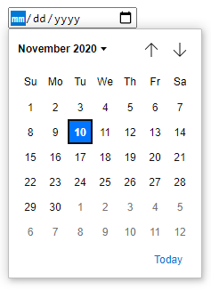
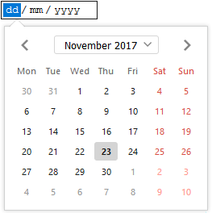
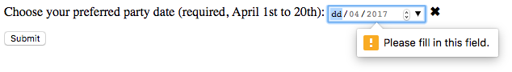

{{HTMLElement("input")}} elements of type="date" create input fields that let the user enter a date, either with a textbox that validates the input or a special date picker interface.
The resulting value includes the year, month, and day, but not the time. The {{HTMLElement("input/time", "time")}} and {{HTMLElement("input/datetime-local", "datetime-local")}} input types support time and date+time input.
The input UI generally varies from browser to browser; see {{anch("Browser compatibility")}} for further details. In unsupported browsers, the control degrades gracefully to <input type="text">.
Among browsers with custom interfaces for selecting dates are Chrome, Edge, and Opera, whose date control looks like so:

And the Firefox date control looks like this:

| {{anch("Value")}} | A {{domxref("DOMString")}} representing a date in YYYY-MM-DD format, or empty |
| Events | {{domxref("HTMLElement/change_event", "change")}} and {{domxref("HTMLElement/input_event", "input")}} |
| Supported common attributes | {{htmlattrxref("autocomplete", "input")}}, {{htmlattrxref("list", "input")}}, {{htmlattrxref("readonly", "input")}}, and {{htmlattrxref("step", "input")}} |
| IDL attributes | list, value, valueAsDate, valueAsNumber. |
| Methods | {{domxref("HTMLInputElement.select", "select()")}}, {{domxref("HTMLInputElement.stepDown", "stepDown()")}}, {{domxref("HTMLInputElement.stepUp", "stepUp()")}} |
A {{domxref("DOMString")}} representing the date entered in the input. The date is formatted according to ISO8601, described in {{SectionOnPage("/en-US/docs/Web/HTML/Date_and_time_formats", "Format of a valid date string")}}.
You can set a default value for the input with a date inside the {{htmlattrxref("value", "input")}} attribute, like so:
<input type="date" value="2017-06-01">
{{EmbedLiveSample('Value', 600, 40)}}
The displayed date format will differ from the actual value — the displayed date is formatted based on the locale of the user's browser, but the parsed value is always formatted yyyy-mm-dd.
You can get and set the date value in JavaScript with the {{domxref("HTMLInputElement")}} value and valueAsNumber properties. For example:
var dateControl = document.querySelector('input[type="date"]');
dateControl.value = '2017-06-01';
console.log(dateControl.value); // prints "2017-06-01"
console.log(dateControl.valueAsNumber); // prints 1496275200000, a JavaScript timestamp (ms)
This code finds the first {{HTMLElement("input")}} element whose type is date, and sets its value to 2017-06-01 (June 1st, 2017). It then reads that value back in string and number formats.
Along with the attributes common to all {{HTMLElement("input")}} elements, date inputs have the following attributes:
| Attribute | Description |
|---|---|
{{anch("max")}} |
The latest acceptable date |
{{anch("min")}} |
The earliest acceptable date |
{{anch("step")}} |
The stepping interval, when clicking up and down spinner buttons and validating the date |
maxThe latest date to accept. If the {{htmlattrxref("value", "input")}} entered into the element occurs afterward, the element fails constraint validation. If the value of the max attribute isn't a possible date string in the format yyyy-mm-dd, then the element has no maximum date value.
If both the max and min attributes are set, this value must be a date string later than or equal to the one in the min attribute.
minThe earliest date to accept. If the {{htmlattrxref("value", "input")}} entered into the element occurs beforehand, the element fails constraint validation. If the value of the min attribute isn't a possible date string in the format yyyy-mm-dd, then the element has no minimum date value.
If both the max and min attributes are set, this value must be a date string earlier than or equal to the one in the max attribute.
step{{page("/en-US/docs/Web/HTML/Element/input/number", "step-include")}}
For date inputs, the value of step is given in days; and is treated as a number of milliseconds equal to 86,400,000 times the step value (the underlying numeric value is in milliseconds). The default value of step is 1, indicating 1 day.
Specifying any as the value for step has the same effect as 1 for date inputs.
Date inputs sound convenient — they provide an easy interface for choosing dates, and they normalize the data format sent to the server regardless of the user's locale. However, there are currently issues with <input type="date"> because of its limited browser support.
In this section, we'll look at basic and then more complex uses of <input type="date">, and offer advice on mitigating the browser support issue later (see {{anch("Handling browser support")}}).
Hopefully, over time browser support will become ubiquitous, and this problem will fade away.
The simplest use of <input type="date"> involves one <input> combined with its {{htmlelement("label")}}, as seen below:
<form action="https://example.com">
<label>
Enter your birthday:
<input type="date" name="bday">
</label>
<p><button>Submit</button></p>
</form>
{{EmbedLiveSample('Basic_uses_of_date', 600, 40)}}
This HTML submits the entered date under the key bday to https://example.com — resulting in a URL like https://example.com/?bday=1955-06-08.
You can use the {{htmlattrxref("min", "input")}} and {{htmlattrxref("max", "input")}} attributes to restrict the dates that can be chosen by the user. In the following example, we set a minimum date of 2017-04-01 and a maximum date of 2017-04-30:
<form>
<label for="party">Choose your preferred party date:
<input type="date" name="party" min="2017-04-01" max="2017-04-30">
</label>
</form>
{{EmbedLiveSample('Setting_maximum_and_minimum_dates', 600, 40)}}
The result is that only days in April 2017 can be selected — the month and year parts of the textbox will be uneditable, and dates outside April 2017 can't be selected in the picker widget.
Note: You should be able to use the {{htmlattrxref("step", "input")}} attribute to vary the number of days jumped each time the date is incremented (e.g. to only make Saturdays selectable). However, this does not seem to be in any implementation at the time of writing.
<input type="date"> doesn't support form sizing attributes such as {{htmlattrxref("size", "input")}}. Prefer CSS for sizing it.
By default, <input type="date"> doesn't validate the entered value beyond its format. The interfaces generally don't let you enter anything that isn't a date — which is helpful — but you can leave the field empty or enter an invalid date in browsers where the input falls back to type text (like the 32nd of April).
If you use {{htmlattrxref("min", "input")}} and {{htmlattrxref("max", "input")}} to restrict the available dates (see {{anch("Setting maximum and minimum dates")}}), supporting browsers will display an error if you try to submit a date that is out of bounds. However, you'll need to double-check the submitted results to ensure the value is within these dates, if the date picker isn't fully supported on the user's device.
You can also use the {{htmlattrxref("required", "input")}} attribute to make filling in the date mandatory — an error will be displayed if you try to submit an empty date field. This should work in most browsers, even if they fall back to a text input.
Let's look at an example of minimum and maximum dates, and also made a field required:
<form>
<label>
Choose your preferred party date (required, April 1st to 20th):
<input type="date" name="party" min="2017-04-01" max="2017-04-20" required>
<span class="validity"></span>
</label>
<p>
<button>Submit</button>
</p>
</form>
If you try to submit the form with an incomplete date (or with a date outside the set bounds), the browser displays an error. Try playing with the example now:
{{EmbedLiveSample('Validation', 600, 100)}}
Here's a screenshot for those of you who aren't using a supporting browser:

Here's the CSS used in the above example. We make use of the {{cssxref(":valid")}} and {{cssxref(":invalid")}} pseudo-elements to add an icon next to the input, based on whether or not the current value is valid. We had to put the icon on a {{htmlelement("span")}} next to the input, not on the input itself, because in Chrome at least the input's generated content is placed inside the form control, and can't be styled or shown effectively.
label {
display: flex;
align-items: center;
}
span::after {
padding-left: 5px;
}
input:invalid + span::after {
content: '✖';
}
input:valid+span::after {
content: '✓';
}
Important: Client-side form validation is no substitute for validating on the server. It's easy for someone to modify the HTML, or bypass your HTML entirely and submit the data directly to your server. If your server fails to validate the received data, disaster could strike with data that is badly-formatted, too large, of the wrong type, etc.
As mentioned, the major problem with date inputs at the time of writing is {{anch("Browser compatibility", "browser support")}}. As an example, the date picker on Firefox for Android looks like this:
Unsupporting browsers gracefully degrade to a text input, but this creates problems in consistency of user interface (the presented controls are different) and data handling.
The second problem is the more serious one; with date input supported, the value is normalized to the format yyyy-mm-dd. But with a text input, the browser has no recognition of what format the date should be in, and there are many different formats in which people write dates. For example:
ddmmyyyydd/mm/yyyymm/dd/yyyydd-mm-yyyymm-dd-yyyyMonth dd, yyyyOne way around this is the {{htmlattrxref("pattern", "input")}} attribute on your date input. Even though the date picker doesn't use it, the text input fallback will. For example, try viewing the following in a unsupporting browser:
<form>
<label for="bday">Enter your birthday:
<input type="date" name="bday" required pattern="\d{4}-\d{2}-\d{2}">
<span class="validity"></span>
</label>
<p>
<button>Submit</button>
</p>
</form>
{{EmbedLiveSample('Handling_browser_support', 600, 100)}}
If you submit it, you'll see that the browser displays an error and highlights the input as invalid if your entry doesn't match the pattern ####-##-## (where # is a digit from 0 to 9). Of course, this doesn't stop people from entering invalid dates, or incorrect formats. So we still have a problem.
span {
position: relative;
}
span::after {
right: -18px;
position: absolute;
}
input:invalid + span::after {
content: '✖';
}
input:valid + span::after {
content: '✓';
}
At the moment, the best way to deal with dates in forms in a cross-browser way is to have the user enter the day, month, and year in separate controls, or to use a JavaScript library such as jQuery date picker.
In this example, we create 2 sets of UI elements for choosing dates: a native <input type="date"> picker and a set of 3 {{htmlelement("select")}} elements for older browsers that don't support the native date input.
{{EmbedLiveSample('Examples', 600, 100)}}
The HTML looks like so:
<form> <div class="nativeDatePicker"> <label for="bday">Enter your birthday:</label> <input type="date" id="bday" name="bday"> <span class="validity"></span> </div> <p class="fallbackLabel">Enter your birthday:</p> <div class="fallbackDatePicker"> <span> <label for="day">Day:</label> <select id="day" name="day"> </select> </span> <span> <label for="month">Month:</label> <select id="month" name="month"> <option selected>January</option> <option>February</option> <option>March</option> <option>April</option> <option>May</option> <option>June</option> <option>July</option> <option>August</option> <option>September</option> <option>October</option> <option>November</option> <option>December</option> </select> </span> <span> <label for="year">Year:</label> <select id="year" name="year"> </select> </span> </div> </form>
The months are hardcoded (as they are always the same), while the day and year values are dynamically generated depending on the currently selected month and year, and the current year (see the code comments below for detailed explanations of how these functions work.)
span {
padding-left: 5px;
}
input:invalid + span::after {
content: '✖';
}
input:valid + span::after {
content: '✓';
}
The other part of the code that may be of interest is the feature detection code — to detect whether the browser supports <input type="date">.
We create a new {{htmlelement("input")}} element, try setting its type to date, then immediately check what its type is — unsupporting browsers will return text, because the date type falls back to type text. If <input type="date"> isn't supported, we hide the native picker and show the fallback ({{htmlelement("select")}}) instead.
// define variables
var nativePicker = document.querySelector('.nativeDatePicker');
var fallbackPicker = document.querySelector('.fallbackDatePicker');
var fallbackLabel = document.querySelector('.fallbackLabel');
var yearSelect = document.querySelector('#year');
var monthSelect = document.querySelector('#month');
var daySelect = document.querySelector('#day');
// hide fallback initially
fallbackPicker.style.display = 'none';
fallbackLabel.style.display = 'none';
// test whether a new date input falls back to a text input or not
var test = document.createElement('input');
try {
test.type = 'date';
} catch (e) {
console.log(e.description);
}
// if it does, run the code inside the if() {} block
if(test.type === 'text') {
// hide the native picker and show the fallback
nativePicker.style.display = 'none';
fallbackPicker.style.display = 'block';
fallbackLabel.style.display = 'block';
// populate the days and years dynamically
// (the months are always the same, therefore hardcoded)
populateDays(monthSelect.value);
populateYears();
}
function populateDays(month) {
// delete the current set of <option> elements out of the
// day <select>, ready for the next set to be injected
while(daySelect.firstChild){
daySelect.removeChild(daySelect.firstChild);
}
// Create variable to hold new number of days to inject
var dayNum;
// 31 or 30 days?
if(month === 'January' | month === 'March' | month === 'May' | month === 'July' | month === 'August' | month === 'October' | month === 'December') {
dayNum = 31;
} else if(month === 'April' | month === 'June' | month === 'September' | month === 'November') {
dayNum = 30;
} else {
// If month is February, calculate whether it is a leap year or not
var year = yearSelect.value;
var isLeap = new Date(year, 1, 29).getMonth() == 1;
isLeap ? dayNum = 29 : dayNum = 28;
}
// inject the right number of new <option> elements into the day <select>
for(i = 1; i <= dayNum; i++) {
var option = document.createElement('option');
option.textContent = i;
daySelect.appendChild(option);
}
// if previous day has already been set, set daySelect's value
// to that day, to avoid the day jumping back to 1 when you
// change the year
if(previousDay) {
daySelect.value = previousDay;
// If the previous day was set to a high number, say 31, and then
// you chose a month with less total days in it (e.g. February),
// this part of the code ensures that the highest day available
// is selected, rather than showing a blank daySelect
if(daySelect.value === "") {
daySelect.value = previousDay - 1;
}
if(daySelect.value === "") {
daySelect.value = previousDay - 2;
}
if(daySelect.value === "") {
daySelect.value = previousDay - 3;
}
}
}
function populateYears() {
// get this year as a number
var date = new Date();
var year = date.getFullYear();
// Make this year, and the 100 years before it available in the year <select>
for(var i = 0; i <= 100; i++) {
var option = document.createElement('option');
option.textContent = year-i;
yearSelect.appendChild(option);
}
}
// when the month or year <select> values are changed, rerun populateDays()
// in case the change affected the number of available days
yearSelect.onchange = function() {
populateDays(monthSelect.value);
}
monthSelect.onchange = function() {
populateDays(monthSelect.value);
}
//preserve day selection
var previousDay;
// update what day has been set to previously
// see end of populateDays() for usage
daySelect.onchange = function() {
previousDay = daySelect.value;
}
Note: Remember that some years have 53 weeks in them (see Weeks per year)! You'll need to take this into consideration when developing production apps.
{{Specifications}}
{{Compat}}